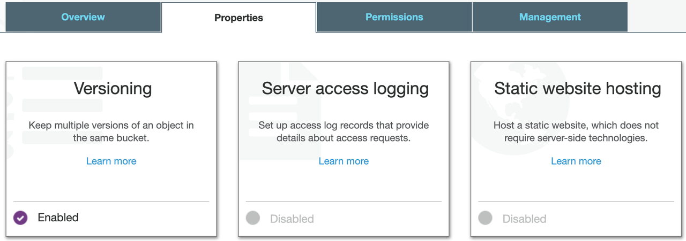
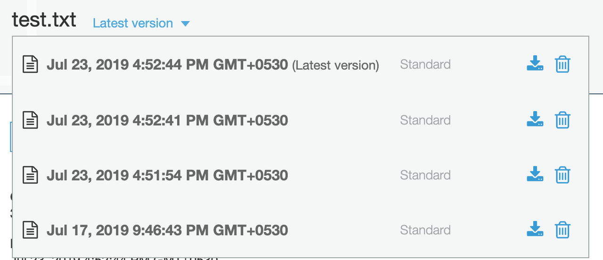

Versioning & Retrieving All Files From AWS S3 With Boto
Introduction
Amazon S3 (Amazon Simple Storage Service) is an object storage service offered by Amazon Web Services. For S3 buckets, if versioning is enabled, users can preserve, retrieve, and restore every version of the object stored in the bucket.
In this article, we will understand how to enable versioning for a bucket and retrieve all versions of an object from AWS web interface as well as Python boto library.
Versioning of Bucket
Bucket versioning can be changed with a toggle button from the AWS web console in the bucket properties.

We can do the same with Python boto3 library.
import boto3 bucket_name = 'avilpage' s3 = boto3.resource('s3') versioning = s3.BucketVersioning(bucket_name) # check status print(versioning.status) # enable versioning versioning.enable() # disable versioning versioning.suspend()
Retrieving Objects
Once versioning is enabled, we can store multiple versions of an object by uploading an object multiple times with the same key.
We can write a simple script to generate a text file with a random text and upload it to S3.
import random import string import boto3 file_name = 'test.txt' key = file_name s3 = boto3.client('s3') with open(file_name, 'w') as fh: data = ''.join(random.choice(string.ascii_letters) for _ in range(10)) fh.write(data) s3.upload_file(key, bucket_name, file_name)
If this script is executed multiple times, the same file gets overridden with a different version id with the same key in the bucket.
We can see all the versions of the file from the bucket by selecting the file and then clicking drop-down at Latest version.

We can write a script to retrieve and show contents of all the versions of the test.txt file with the following script.
import boto3 bucket_name = 'avilpage' s3_client = boto3.client('s3') versions = s3_client.list_object_versions(Bucket=bucket_name) for version in versions: version_id = versions['Versions'][0]['VersionId'] file_key = versions['Versions'][0]['Key'] response = s3.get_object( Bucket=bucket_name, Key=file_key, VersionId=version_id, ) data = response['Body'].read() print(data)
Conclusion
Object versioning is useful to protect data from unintended overwrites. In this article, we learnt how to change bucket versioning, upload multiple versions of same file and retrieving all versions of the file using AWS web console as well as boto3.

Written by
Chillar Anand
Musings about programming, careers & life.